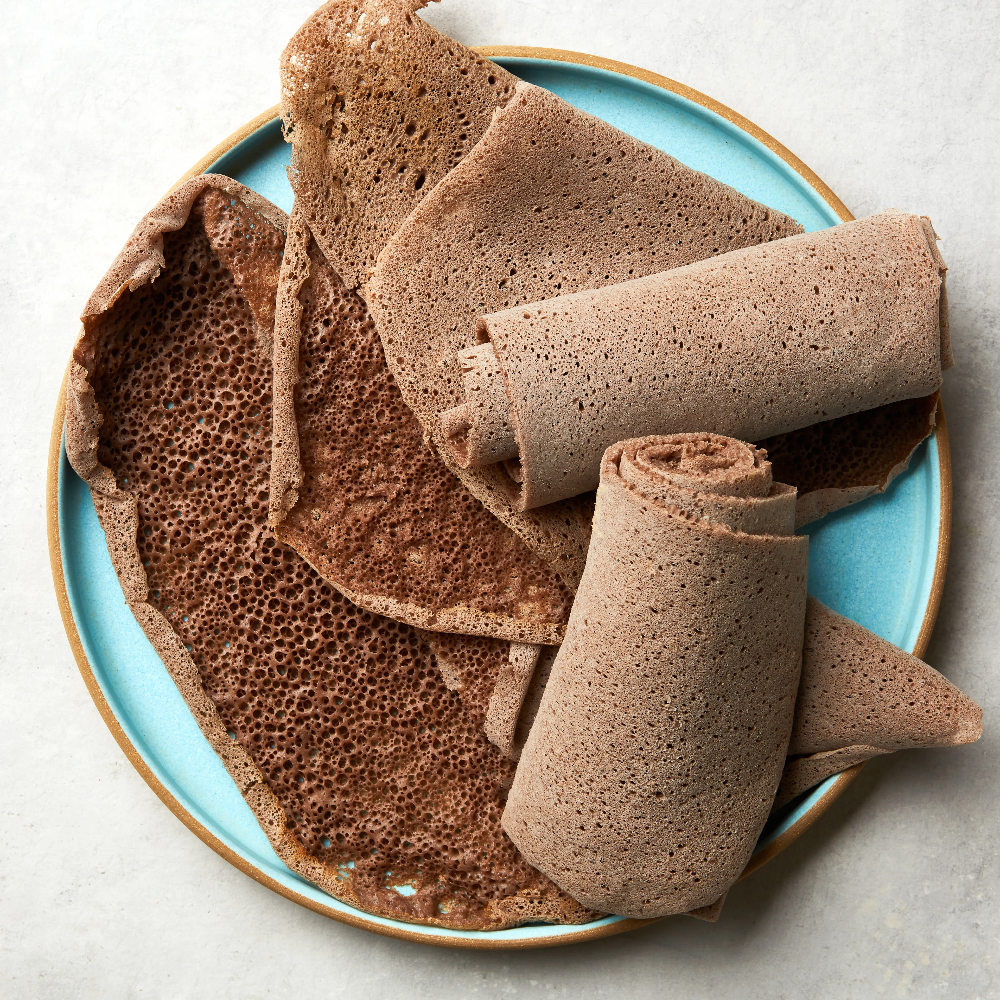
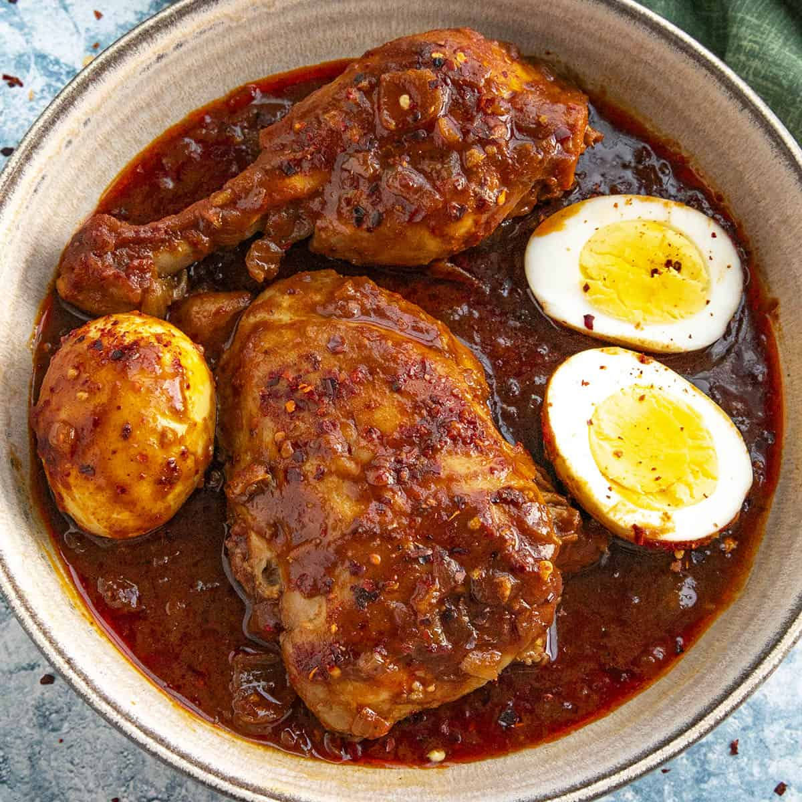
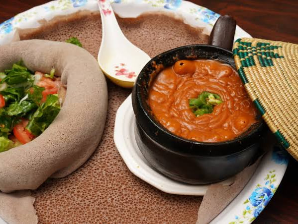
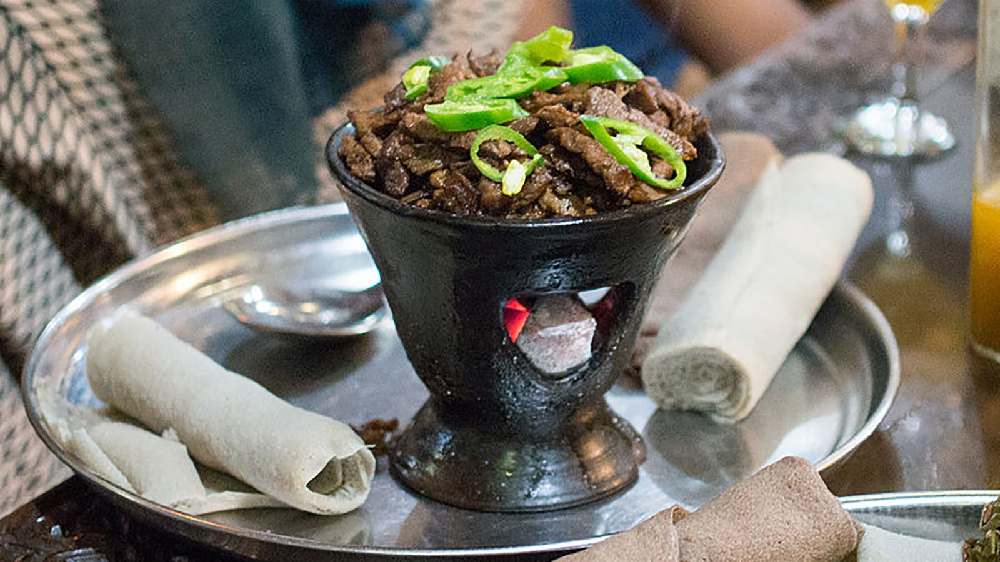
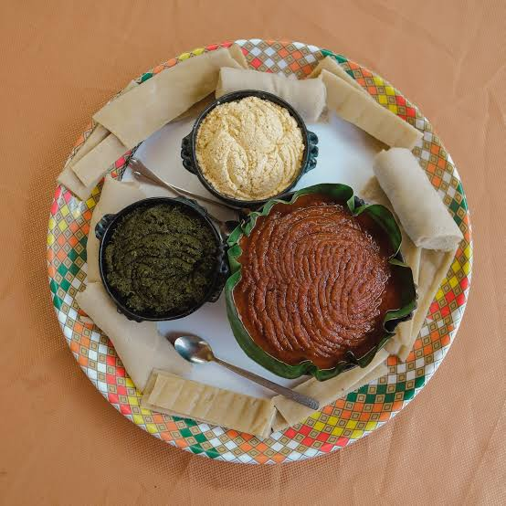

Beyaynetu
Beyaynetu is a colorful Ethiopian mixed platter that brings together several different dishes in one meal, usually served on a large piece of injera.It is commonly shared with family and friends. It may include a variety of stews, vegetables,legumes, salads, and other traditional Ethiopian foods, allowing people to enjoy different flavors and textures at the same time. The word “beyaynetu” is associated with the idea of a combination or variety, making it a popular choice for people who want to experience several Ethiopian dishes in one meal.

Injera
Injera is a traditional Ethiopian sourdough flatbread made mainly from teff flour. It has a soft, spongy texture and a slightly sour taste. is commonly placed beneath other foods and used to scoop up stews and vegetables, making it an important part of Ethiopian communal meals.

Doro Wat
Doro Wat is a rich and spicy Ethiopian chicken stew made with onions, berbere spice, butter, and other seasonings. It is traditionally served with boiled eggs and injera and is especially associated with holidays, celebrations, and important gatherings.

Shiro
Shiro is a smooth Ethiopian stew made from ground chickpeas or other legumes and seasoned with spices. It can be prepared in different ways, from mild and creamy to rich and spicy. Shiro is commonly served with injera and enjoyed as an everyday meal as well as during gatherings.

Tibs
Tibs is a popular Ethiopian dish made from pieces of meat sautéed with onions, peppers, herbs, and spices. It can be prepared in different styles depending on the region and ingredients. Tibs is often served with injera and is commonly enjoyed during meals with family and friends.

Kitfo
Kitfo is a traditional Ethiopian dish made from finely minced beef seasoned with spiced clarified butter and traditional seasonings. It is often served with ayib, a fresh cheese, and cooked greens. Kitfo is particularly associated with southern Ethiopian cuisine and is enjoyed on special occasions as well as during ordinary meals.